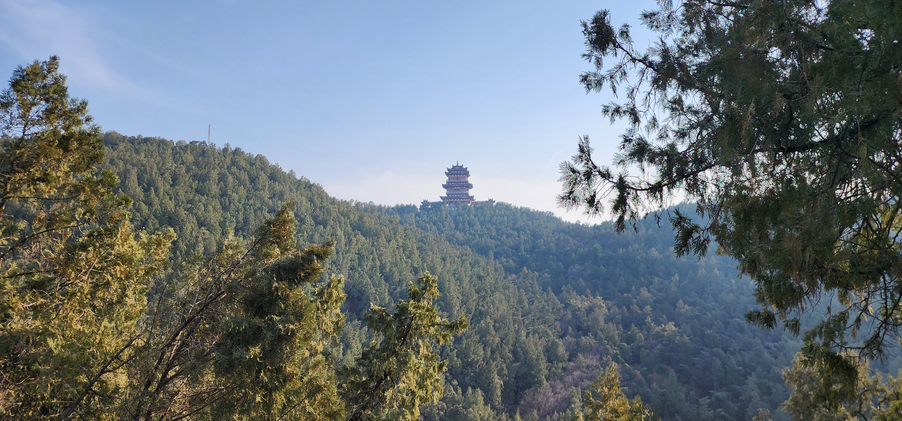
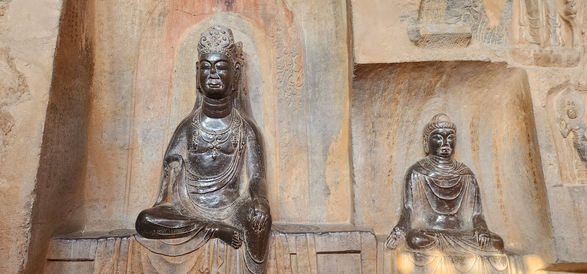
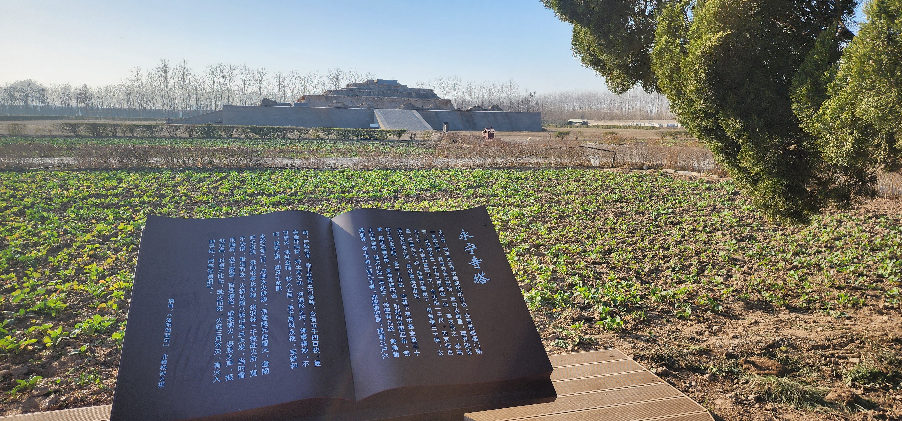
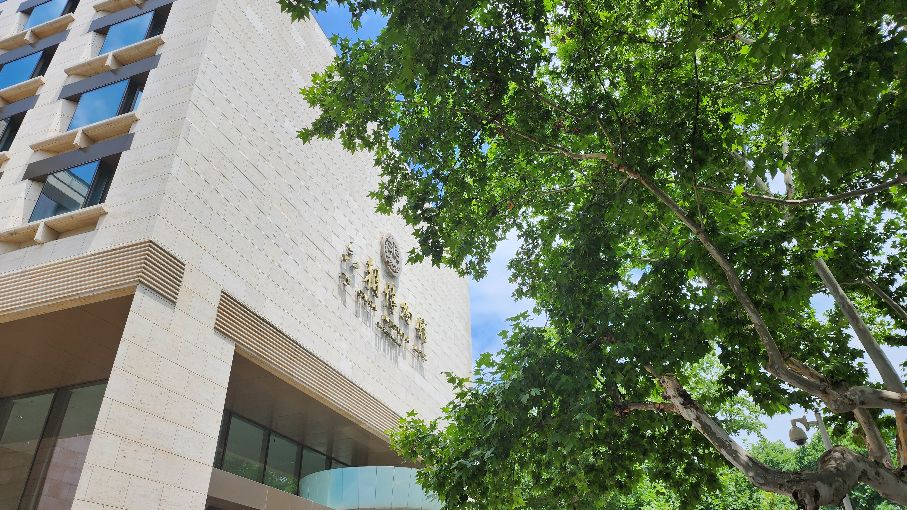
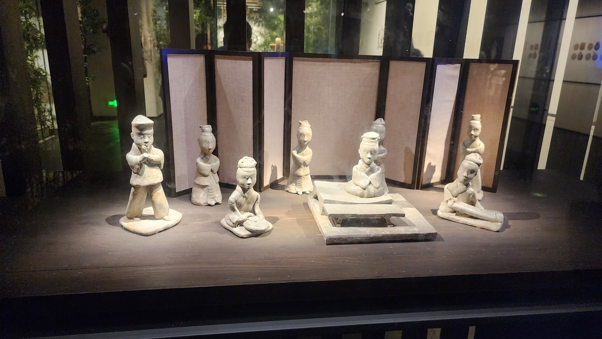
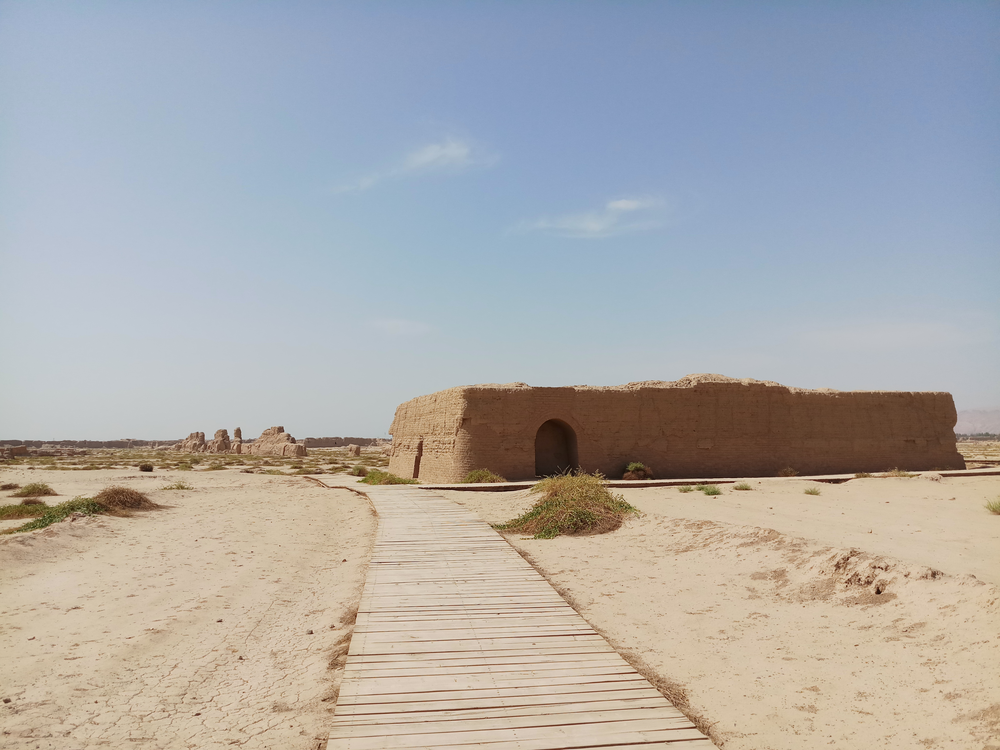
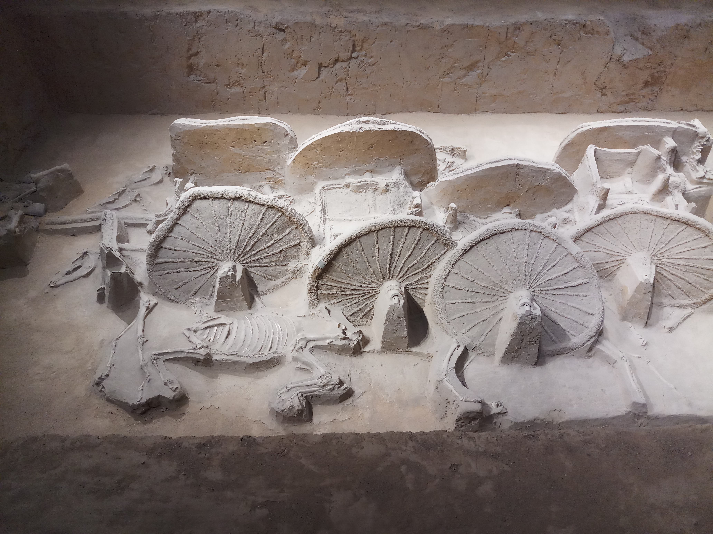
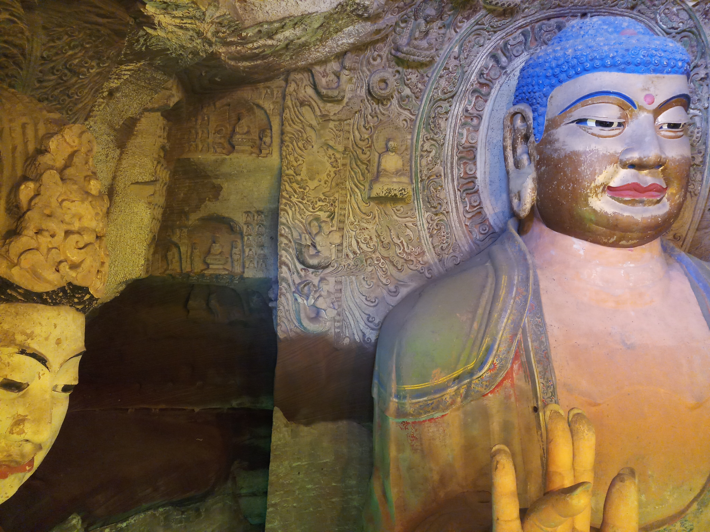
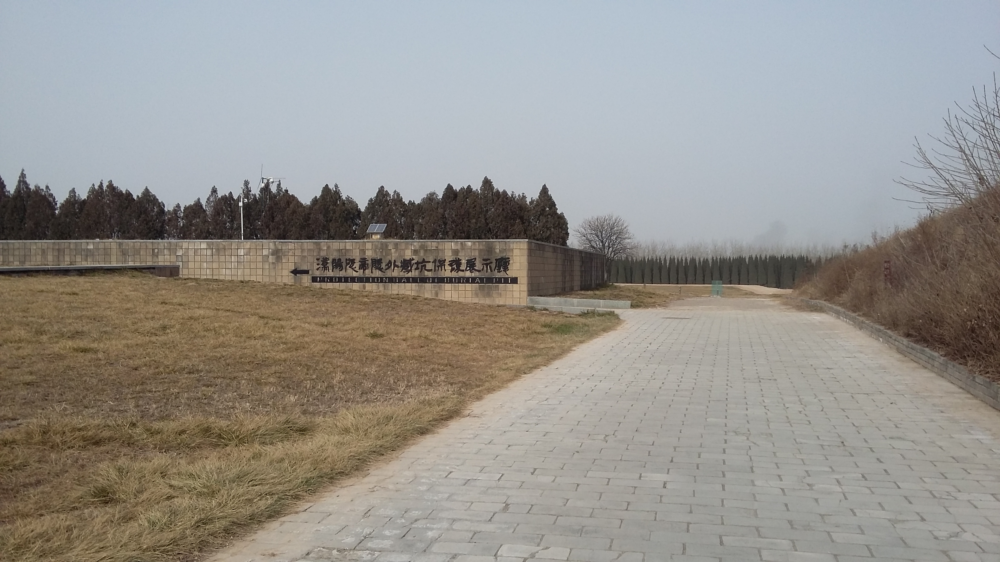
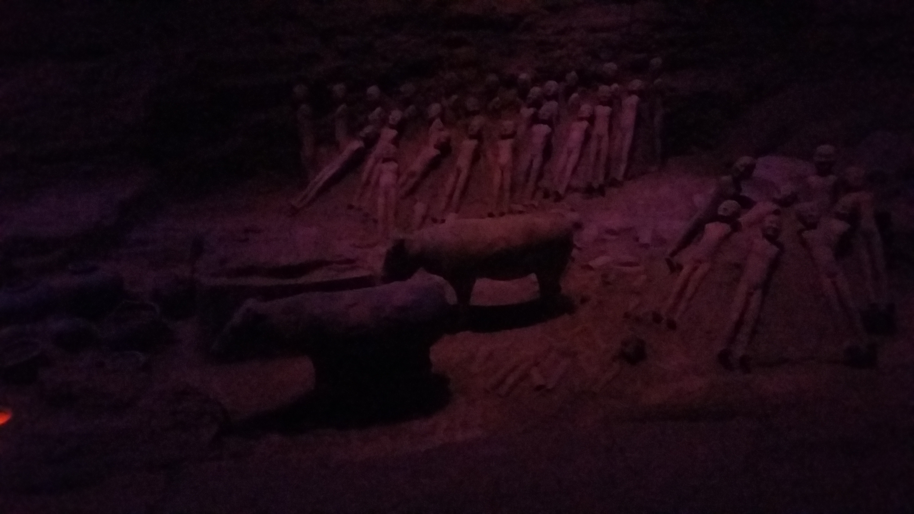

Games
Gallery
The gallery collects photos taken by me over the years. They capture some lesser-known but fasinating historical sites in China. (And no, I'm not a photography enthusiast 😂 -- I just like exploring and learning about the past.)


除了著名的摩崖造像，还有众多北朝隋唐的碑刻在碑林聚集


中国古代第一高塔(~150m)的遗迹，记述着北魏王朝的崩塌


连环画式的彩塑群、《黑神话：悟空》的取景地之一
“赤甲白盐俱刺天，闾阎缭绕接山巅”，来自诗圣杜甫的《夔州歌》


虽然建康城被隋朝毁灭，但六朝的浪漫依旧在这里留存


火焰山下、烈日炎炎、丝路古城的遗迹


华丽的饰品和玉器、真实的殉葬车马坑


“大唐贞观二年十一月十三日造”的巨大阿弥陀佛，相传是唐太宗为纪念浅水原之战阵亡将士而造


汉景帝地下世界的冰山一角